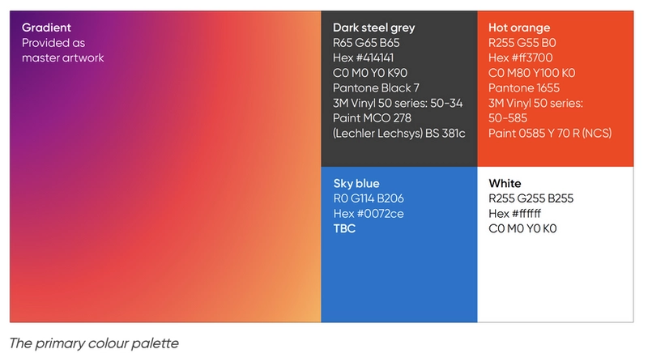
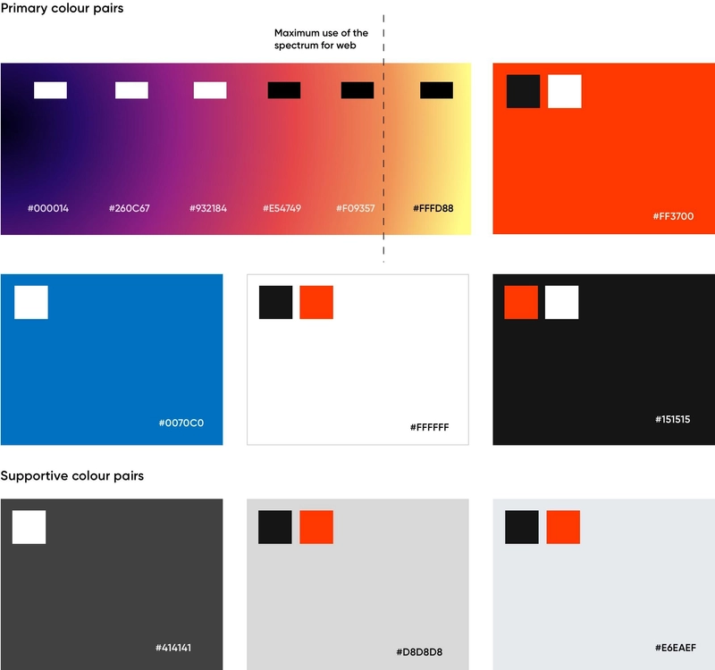

01 / COULEUR
Une palette
qui a du sens.
Orange et bleu ciel comme accents, neutres pour la lisibilité et dégradé pour les appels à l'action.
Un socle commun pour créer des expériences numériques cohérentes, accessibles et fidèles à l'identité ArcelorMittal.
CSS natif · Sans dépendance · Pensé pour vos équipes
Des choix de design documentés et réutilisables, pour garder chaque interface sur la même ligne.
Orange et bleu ciel comme accents, neutres pour la lisibilité et dégradé pour les appels à l'action.
Gilroy Semibold pour les titres, Gilroy Regular pour le corps de texte.
font-family: "GilroyforArcelorMittal-SmBd", sans-serif;font-family: "GilroyforArcelorMittal", sans-serif;12 colonnes sur desktop, 6 sur tablette, 2 sur mobile. Le même contenu, bien composé partout.
La palette web est liée à la palette générale ArcelorMittal, mais elle lui est propre. Respectez les associations ci-dessous : les couleurs vives sont des accents, les neutres structurent les contenus.
#000014 · RGB 0, 0, 20
Dégradé · texte blanc
#260C67 · RGB 38, 12, 103
Dégradé · texte blanc
#932184 · RGB 147, 33, 132
Dégradé · texte blanc
#E54749 · RGB 229, 71, 73
Dégradé · texte noir
#F09357 · RGB 240, 147, 87
Dégradé web max. · texte noir
#FFDF88 · RGB 255, 223, 136
Dégradé master · hors limite web
#FF3700 · RGB 255, 55, 0
Accent · texte noir ou blanc
#0072CE · RGB 0, 114, 206
Accent / fond de module · texte blanc
#414141 · RGB 65, 65, 65
Neutre / fond de module · texte blanc
#FFFFFF · RGB 255, 255, 255
Fond neutre · texte noir ou accent orange
#151515 · RGB 21, 21, 21
Neutre · texte blanc ou accent orange
#D8D8D8 · RGB 216, 216, 216
Fond de module · texte noir ou accent orange
#E6EAEF · RGB 230, 234, 239
Fond de module · texte noir ou accent orange
Master artwork · #000014 → #260C67 → #932184 → #E54749 → #F09357 → #FFDF88
Maximum web · arrêter à #F09357 ; ne pas inclure le jaune #FFDF88 sur les éléments web.


Survolez ou placez le focus au clavier pour révéler le dégradé.
<button class="am-button am-button--primary">Action principale</button>
<button class="am-button am-button--icon" aria-label="Ajouter aux favoris">
<svg class="am-icon" viewBox="0 0 24 24" aria-hidden="true">…</svg>
</button><button class="am-button am-button--hot-orange">Action accent</button>
<span class="am-badge am-badge--accent">À lire</span>
<p class="am-kicker">Information clé</p>
<nav aria-label="Fil d'Ariane">
<ol class="am-breadcrumb">
<li><a href="/">Accueil</a></li>
<li aria-current="page">Couleurs</li>
</ol>
</nav>Le blanc est le premier choix pour le texte sur ce fond.
<button class="am-button am-button--sky">Action secondaire</button>
<section class="am-theme--sky-blue am-layout-padding-2xs">
<h2>Module bleu ciel</h2>
<p>Texte blanc sur fond #0072CE.</p>
</section>Texte blanc · #414141
Texte blanc · #151515
Texte noir · #D8D8D8
Texte noir · #E6EAEF
Texte noir ou action orange · #FFFFFF
<section class="am-theme--dark-steel-grey am-layout-padding-2xs">Texte blanc</section>
<section class="am-theme--black am-layout-padding-2xs">Texte blanc</section>
<section class="am-theme--light-grey am-layout-padding-2xs">Texte noir</section>
<section class="am-theme--light-blue am-layout-padding-2xs">Texte noir</section>
<section class="am-theme--white am-layout-padding-2xs">Texte noir</section>Les graphiques, diagrammes et illustrations peuvent utiliser le spectre de marque.
<div class="brand-chart brand-chart-demo" role="img" aria-label="Progression">
<span style="--chart-value: 78%"></span>
<span style="--chart-value: 56%"></span>
<span style="--chart-value: 34%"></span>
</div>
<style>
.brand-chart-demo {
display: flex;
height: 10rem;
align-items: end;
gap: 1rem;
}
.brand-chart span {
width: 20%;
height: var(--chart-value);
background: var(--am-gradient-web);
}
</style>Une illustration peut justifier un fond doré ou beige pour créer une ambiance cohérente.
Le ton de cette démo n'est pas une couleur officielle à réutiliser.<section class="story-module">
<h2>Un récit lié à l'illustration</h2>
<p>Utiliser uniquement la teinte validée pour ce projet.</p>
</section>
<style>
.story-module {
background: var(--project-approved-story-color);
}
</style>
<!-- Faire approuver la valeur par l'équipe de marque avant usage. -->Ce beige est un simple aperçu de la page de démonstration, pas un token de la librairie. Pour toute nouvelle couleur, contacter l'équipe de marque à Londres.
Règle générale : titres et textes courants restent neutres. Réservez l'orange aux petits titres, tags, dates, liens, breadcrumbs et états sélectionnés ; sur fond clair, gardez le texte neutre et faites porter l'accent orange par le fond d'un tag, un soulignement ou une bordure. Évitez de multiplier orange et bleu dans une même interface. Les tokens positifs, alerte et désactivé restent réservés aux états fonctionnels. Sur orange, le noir convient au texte courant ; le blanc est à réserver aux grands libellés.
Les classes de titres et les balises sémantiques partagent la même échelle. Utilisez les balises HTML pour préserver la structure du document.
Heading 1
h1 · .am-h1 — 66 / 82,5 pxHeading 2
h2 · .am-h2 — 50 / 62,5 pxHeading 3
h3 · .am-h3 — 37 / 42,2 pxHeading 4
h4 · .am-h4 — 28 / 35 pxHeading 5
h5 · .am-h5 — 21 / 26,2 pxBody Copy 1 Regular — 16 / 20 px. Texte courant et contenu de lecture.
Body Copy 1 Semibold — 16 / 20 px. Emphase ponctuelle.
Body Copy 2 Regular — 14 / 17,5 px. Informations secondaires et aides.
Label Semibold — 14 / 17,5 px. Libellé de champ, par exemple.
<h2>Un titre de section</h2>
<h2 class="am-h2">Un titre avec la classe utilitaire</h2>
<p class="am-body-2">Un texte secondaire.</p>Ces tokens Frontify complètent les espacements de composants. Les classes de gap et de padding consomment les mêmes valeurs.
2xs16 px--am-layout-space-2xsxs24 px--am-layout-space-xssm32 px--am-layout-space-smmd48 px--am-layout-space-mdlg64 px--am-layout-space-lgxl96 px--am-layout-space-xlxl2160 px--am-layout-space-xl2<div class="am-layout-stack am-layout-gap-xs">…</div>
<article class="am-layout-padding-md">…</article>
/* CSS : gap: var(--am-layout-space-xs); */Ces trois couleurs ne s'utilisent que lorsqu'il faut notifier une action positive, une erreur ou une indisponibilité. Pas de titres, de corps de texte, de navigation, de listes, de tableaux ni de fonds de modules colorés avec cette palette.
À réserver à un CTA qui ne fonctionne pas ou n'est pas disponible.
<button class="am-button am-button--secondary" disabled>
Envoi indisponible
</button>Vos modifications ont bien été prises en compte.
<div class="am-alert am-alert--success" role="status">
<strong>Enregistrement terminé</strong>
<p>Vos modifications ont bien été prises en compte.</p>
</div>Vérifiez les informations avant de réessayer.
<div class="am-alert am-alert--error" role="alert">
<strong>Une erreur est survenue</strong>
<p>Vérifiez les informations avant de réessayer.</p>
</div>Les alertes gardent un fond neutre et un texte neutre ; la couleur d'action reste limitée au repère de statut. Ne pas réutiliser ces couleurs pour une action disponible, un lien ou un module.
Une grille de 24 px avec une marge intérieure de 4 px garantit une taille minimale lisible. Ne déformez pas les icônes ; gardez un trait visible, notamment pour les flèches et les menus mobiles.
<svg class="am-icon" viewBox="0 0 24 24" role="img" aria-labelledby="search-icon-title">
<title id="search-icon-title">Rechercher</title>
<circle cx="10.5" cy="10.5" r="5.5"></circle>
<path d="m15 15 4 4"></path>
</svg>Des éléments simples, composables et faciles à intégrer à vos applications.
.am-button<button class="am-button am-button--primary">Action</button>.am-input<input class="am-input" type="email">.am-alert<div class="am-alert am-alert--success" role="status">...</div>Essayez les composants, explorez leurs états et adaptez les exemples à votre application.
Survolez ou utilisez Tab pour explorer le focus clavier. Les actions principales révèlent une flèche de gauche à droite.
Un lien avec un soulignement animé reste reconnaissable et accessible au clavier.
Le menu utilise un élément natif <details> : il fonctionne sans JavaScript.
Les onglets organisent les contenus liés en sections faciles à parcourir.
Les flèches gauche et droite changent d'onglet ; Home et End atteignent le premier et le dernier.
Les rôles ARIA et les états sélectionnés sont mis à jour à chaque changement.
Présentez une action importante sans perdre le contexte de la page.
| Avancement | |||
|---|---|---|---|
| Forge Connect | Digital | En cours | 72 % |
| Steel Compass | Innovation | À valider | 48 % |
| Green Horizon | R&D | En cours | 91 % |
| People Portal | RH | Planifié | 16 % |
Pour partager des règles fiables, améliorer l'accessibilité et éviter de recréer les mêmes composants à chaque projet.
Non. Le socle est construit en CSS natif et peut être utilisé avec React, Vue, Angular ou du HTML simple.
Un modèle flexible pour mettre en avant un contenu important.
Explorer les fondationsUtilisez .am-stack, .am-cluster et .am-gap-* pour composer les blocs.
La grille passe de 12 à 6 puis 2 colonnes selon la largeur d'écran.
Les boutons icônes exigent un nom accessible ; l'infobulle native est un complément, pas son remplacement.
Le paquet est préparé pour le registre npm privé de l'entreprise. Pas de framework imposé, pas de dépendance superflue.
npm install @guajava-sasu/design-system@import "@guajava-sasu/design-system";